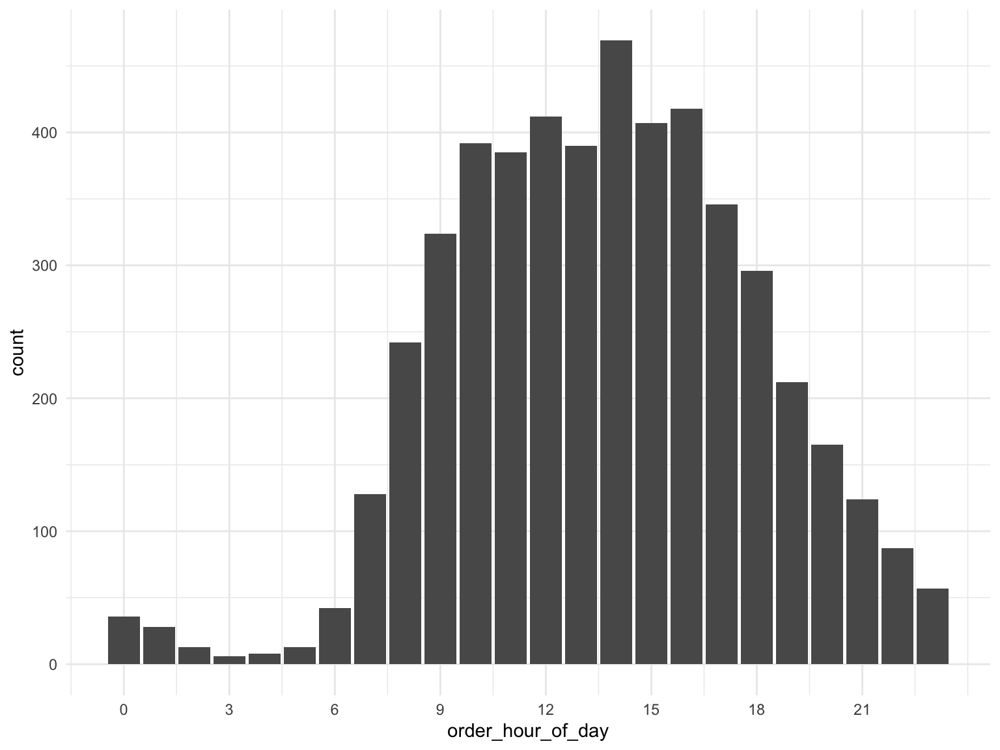
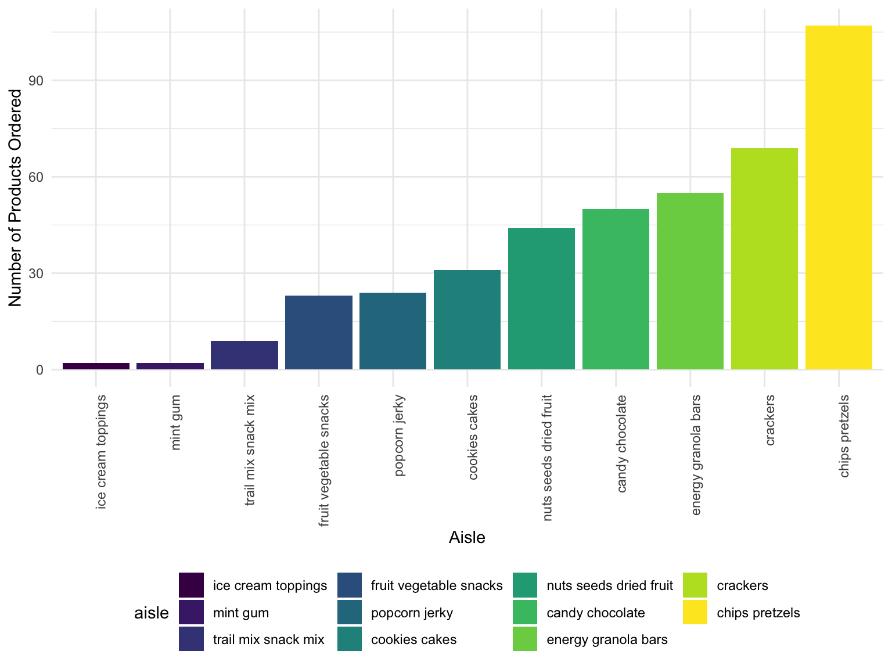

library(tidyverse)
library(p8105.datasets)
library(plotly)
knitr::opts_chunk$set(
echo = TRUE,
warning = FALSE,
fig.width = 8,
fig.height = 6,
out.width = "90%"
)
options(
ggplot2.continuous.colour = "viridis",
ggplot2.continuous.fill = "viridis"
)
scale_colour_discrete = scale_colour_viridis_d
scale_fill_discrete = scale_fill_viridis_d
theme_set(theme_minimal() + theme(legend.position = "bottom"))data("instacart")
set.seed(123)
instacart_data <-
instacart %>%
sample_n(5000)instacart_data %>%
ggplot(aes(x = order_hour_of_day)) +
geom_bar() +
scale_x_continuous(breaks = c(0, 3, 6, 9, 12, 15, 18, 21))
instacart_data %>%
count(order_hour_of_day) %>%
plot_ly(x = ~order_hour_of_day, y = ~n, type = "bar")instacart_data %>%
group_by(order_hour_of_day, department) %>%
count(department) %>%
ggplot(aes(x = department, y = order_hour_of_day, color = department)) +
geom_boxplot() +
theme(axis.text.x = element_text(angle = 90, hjust = 1))
instacart_data %>%
filter(
department == "snacks"
) %>%
count(aisle) %>%
mutate(
aisle = fct_reorder(aisle, n)
) %>%
ggplot(aes(x = aisle, y = n, fill = aisle)) +
geom_col() +
theme(axis.text.x = element_text(angle = 90, hjust = 1)) +
labs(
x = "Aisle",
y = "Number of Products Ordered"
) instacart_data %>%
filter(
department == "snacks"
) %>%
count(aisle) %>%
mutate(
aisle = fct_reorder(aisle, n)
) %>%
mutate(
aisle = as.factor(aisle)
) %>%
plot_ly(x = ~aisle, y = ~n, color = ~aisle, type = "bar")